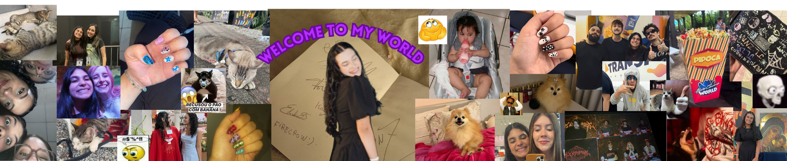
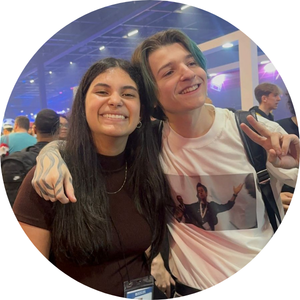
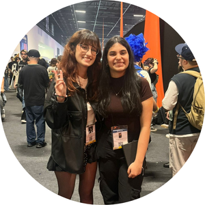
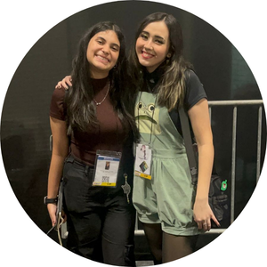
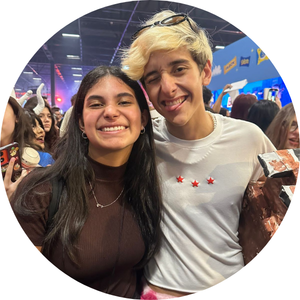
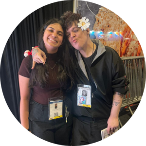
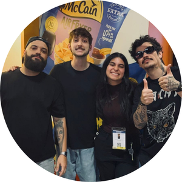
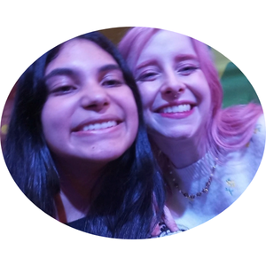

Melhor dia da minha vida! 🤍
Eu não podia fazer esse site e não falar sobre o melhor dia da minha vida, que foi a BGS. Foi um dia que eu esperei por muito tempo e, quando finalmente chegou, foi ainda melhor do que eu imaginava. Cada momento ali foi especial, tudo ficou guardado em mim. Foi um daqueles dias que a gente queria viver de novo mil vezes, sem dúvida um dos mais importantes pra mim 🤍 e que eu nunca vou esquecer
Mais oque é a BGS?
A Brasil Game Show é o maior evento de games da América Latina, um lugar onde tudo gira em torno do universo dos jogos, com estandes, experiências, campeonatos e criadores de conteúdo.
E como tudo isso aconteceu?
Tudo começou em dezembro de 2024, quando minha prima, que trabalha lá, comentou sobre a viagem.. E, na época, eu fiquei chocada, porque era algo que eu gostava desde sempre e nunca imaginava que minha prima trabalhava lá.Com o tempo, esse plano acabou virando um sonho. Mesmo sem saber se ia dar certo, eu continuei pensando nisso durante o ano, como algo que eu realmente queria viver.
Até que, no dia 16 de agosto, no meu aniversário, veio a oportunidade de verdade. Minha prima mandou mensagem explicando tudo certinho pra minha mãe, mas mesmo assim não foi tão fácil, porque era um gasto a mais, a viagem, e tudo envolvido...
Mas no final deu certo. Eu viajei, fui pra São Paulo, vivi tudo aquilo que eu sempre quis. Presenciei algumas coisas bem inesperadas, mas cada segundo valeu a pena. Eu conheci pessoas que eu admirava, vivi momentos que eu nunca vou esquecer!
Queria deixar registrado aqui as pessoas principais que eu encontrei!! com uma descriçãozinha cada um também.


Não podia começar sem falar do matt! Ele foi a primeira pessoa que eu encontrei lá e não podia ser melhor!

Quando eu estava indo embora acabei encontrando a carol e que mulher querida! Mesmo a fila estando gigante ela falou comigo, me abraçou e assinou meu caderninho KKKKKK

Bela foi outra querida, depois da carol a bela já estava do lado até porque elas são cunhadas e estavam juntas e com certeza é a uma das minhas fotos favoritas!

O feu eu encontrei duas vezes andando pelo evento e as duas vezes ele foi um querido, na segunda vez até me chamar pelo nome ele chamou!

Com certeza um dos meus maiores choques foi descobrir que minha prima que trabalha lá é amiga do Bastet, e ele com certeza é outra pessoa que eu tive outros olhos depois da BGS,ele é super legal!

E com certeza o que eu mais esperei foi minha foto com o Balela!! fiquei um total de 3 horas na fila, mas com certeza eu não me arrependo, amo essa foto e tudo o que ela significa pra mim, até como wallpaper eu uso

E a foto que eu teno uma historia gigante pra contar e uma das melhores! Foi inesplicavel ver a bagi pessoalmente, admiro demais ela como mulher e pessoa e com certeza é a que mais ficam chocados quando eu mostro a foto KKKKKK